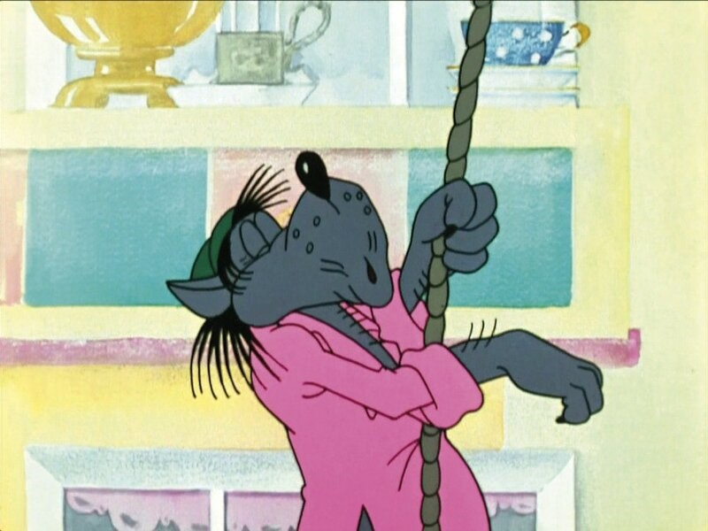
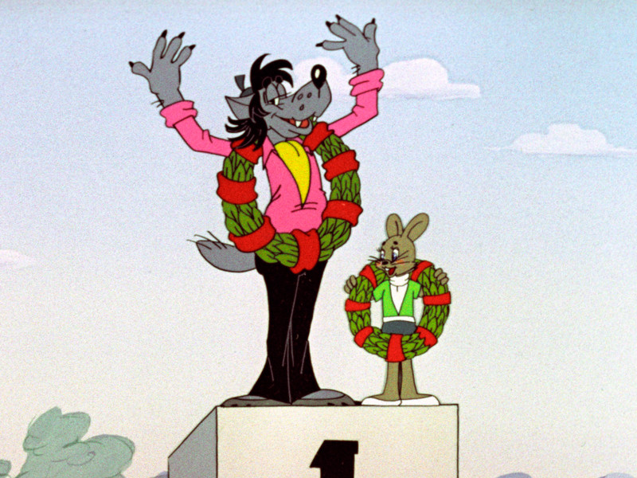

На первый взгляд мы видим обычного великовозрастного раздолбая, но если присмотреться, то станет понятно, что с Волком что-то не так. Мы видим во многих сериях, что Волк умеет управлять любыми транспортными средствами, обладает недюжинной силой (сгибает в узел стойку микрофона), быстро бегает, умеет лазать по канатам, плавать под водой, мастерски стреляет из ружья по движущимся целям, играет на гитаре. При этом он отличается хулиганскими наклонностями, курит, возможно, и выпивает, так как в 9 серии он пытается разломать вяленую рыбу, которую обычно употребляют с пивом. Волк предпочитает скрываться от милиции, у него часто возникают конфликты, после которых его арестовывают за хулиганство. Вероятно, в тюрьме Волк сидел не раз. Волк живет кирпичном старом доме с минимумом мебели. В доме неопрятная обстановка, но есть телевизор, цветочки в горшках, занавески на окнах, что говорит о нестабильном характере Волка, который способен ухаживать за цветами, но, в тоже время, в порыве ярости крушит все.
Волк играет на гитаре, во сне играет на гуслях. Поет хриплым голосом, то ли в подражание Высоцкому, то ли от курения. Ритмично танцует, катается на коньках и лыжах. Запросто вживается в роль Снегурочки на детском празднике - хорошо маскируется и перевоплощается. Может самостоятельно собрать автомобиль.За рулем автомобиля, электрокара и мотоцикла чувствует себя не совсем уверенно. Но смекалка и природный авантюризм подсказывают ему как управлять совершенно оригинальным авто в 14-й серии. Большими механизмами — авокраном и комбайном — Волк управляет увереннее. Меткое попадание из ружья в 1-й серии выдает хороший глазомер и опыт стрельбы.


Победа в велогонке (13 серия)
Первое место по неизвестной дисциплине (предположительно, по тяжелой атлетике) (4 серия)
Попадание по веревке из гарпуна с большого расстояния (1 серия)
Успешный прыжок из самолета без парашюта (6 серия)
Выжил после столкновения с зайцеподобным роботом (14 серия)